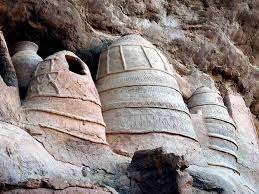
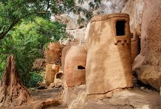
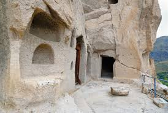

Description
La grotte de Niansogoni est un ancien refuge creusé dans la falaise près de Banfora. Elle offre une belle vue sur la vallée et abrite encore des traces d’habitations anciennes.
Historique
Autrefois habitée par le peuple Sénoufo, la grotte servait de cachette contre les ennemis. On y trouve encore des poteries, des greniers et des outils traditionnels.
Galerie photos


